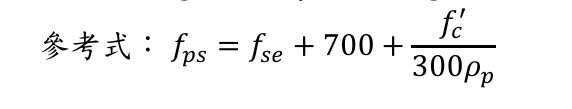
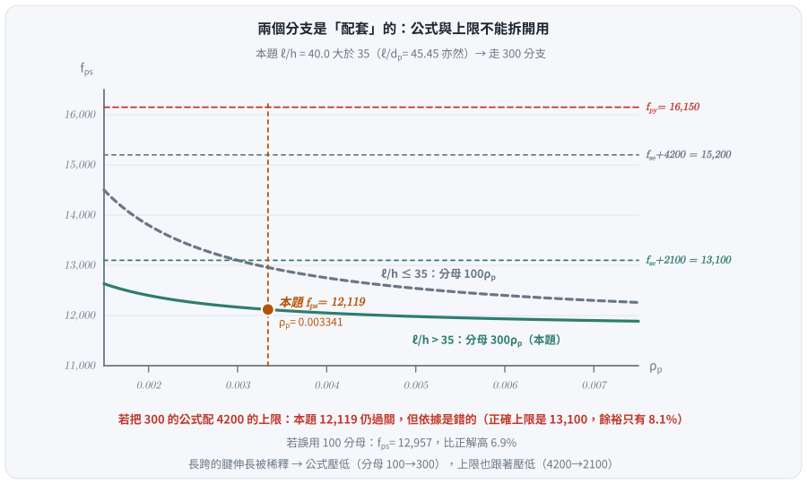
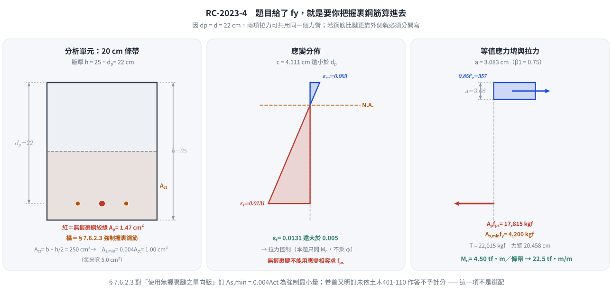
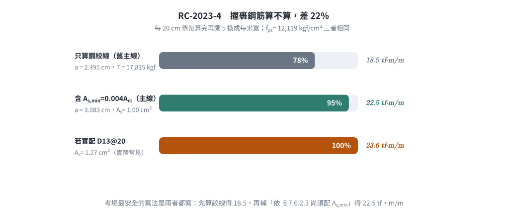

📄 題目正本：考卷原文・附圖・判讀清單（已確認）
RC-2023-4 題目正本
本檔只記錄考卷上寫了什麼、圖上畫了什麼，不含任何解法。解析見同資料夾
RC-2023-4.md。
判讀清單已經使用者確認（凍結）；本檔原則上不再修改（改動須回考卷原圖並記 log）。
| 項目 | 內容 |
|---|---|
| 考卷 | raw/exams/RC-2023_鋼筋混凝土設計與預力.pdf 第 2 頁，第四題；作答規範與鋼筋資料見第 1 頁 |
| 考年 | 民國 112 年（2023） |
| 配分 | 25 分 |
| 附圖 | 無（本題無附圖）；參考式截圖 RC-2023-4-eqn-1.png |
| 判讀狀態 | 已確認（2026-11-14 使用者確認；影響答案項目使用者選擇：#1 普通鋼筋取規範無握裹預力版最少握裹鋼筋量 0.004A_ct；轉錄 2026-11-14；PyMuPDF 110 dpi 目視＋抽出文字核對（參考式為特殊字型，以目視為準）；盲讀後才比對既有解析） |
1. 考卷原文（逐字）
四、一簡支後拉預力混凝土單向版，短向跨度為 10 m，斷面深度 h= 25 cm，有效深度 d= 22 cm，配置無握裹鋼絞線（$A_b$ = 1.47 cm²）及普通具握裹鋼筋，兩者間距均為 20 cm。試求此單向版之計算撓曲強度 $M_n$。已知鋼絞線 $f_{pu}$ = 19000 kgf/cm²，鋼鍵有效預力 $f_{se}$= 11000 kgf/cm²，$f_{py}$=0.85 $f_{pu}$，$f'_c$ = 420 kgf/cm²，$f_y$＝4200 kgf/cm²。（25 分）
參考式：$f_{ps} = f_{se} + 700 + \dfrac{f'_c}{300\rho_p}$
2. 考卷給的公式、附表與參數
- 題文數值：跨度 10 m；$h=25$、$d=22$ cm；無握裹鋼絞線每根 1.47 cm²、間距 20 cm；普通具握裹鋼筋間距 20 cm；$f_{pu}=19{,}000$、$f_{se}=11{,}000$、$f_{py}=0.85f_{pu}$、$f'_c=420$、$f_y=4200$ kgf/cm²。
- 參考式（無握裹、跨深比大於 35 的形式），照錄如上，見
RC-2023-4-eqn-1.png。 - 第 1 頁作答規範：中國土木水利工程學會「混凝土工程設計規範與解說」（土木 401-110），未依上述規範作答，不予計分。第 1 頁鋼筋資料：D10 $d_b$ 0.96、$A_b$ 0.71；D13 1.27、1.27；D25 2.54、5.07；D29 2.87、6.47；D32 3.22、8.14；D36 3.58、10.07（cm、cm²）。
- 沒有給：普通具握裹鋼筋的號數或面積、兩者是否同在 $d=22$ cm、$\beta_1$、$\phi$（題目只問 $M_n$）。
- 卷首注意事項：可以使用電子計算器。不必抄題，作答時請將試題題號及答案依照順序寫在試卷上，於本試題上作答者，不予計分。本科目除專門名詞或數理公式外，應使用本國文字作答。
3. 附圖
本題無附圖。

4. 判讀清單
「把握」標不確定者請優先確認；解讀類項目（題目用字的意思）另標「解讀」。
| # | 項目 | 判讀 | 圖上／題文依據 | 把握 |
|---|---|---|---|---|
| 1 | 普通鋼筋量 | 考卷只給間距 20 cm，沒有給號數或面積；作答必須自行假設（例：依規範無握裹預力版最少握裹鋼筋量 $0.004A_{ct}$ 自行配筋，或自選號數） | 題文「配置…普通具握裹鋼筋，兩者間距均為 20 cm」；第 1 頁鋼筋表未指定 | 不確定（影響答案）；使用者確認（選擇見頭表判讀狀態） |
| 2 | 深度 | 題目只給一個 $d=22$ cm，解讀為鋼絞線與普通鋼筋皆在 $d=22$ cm | 題文 | 確定（解讀） |
| 3 | 鋼絞線量 | 每 20 cm 一根 1.47 cm² → 每公尺 5 根、7.35 cm²/m | 題文 | 確定 |
| 4 | 參考式適用 | 跨深比 $L/h = 1000/25 = 40 > 35$，與考卷給的 $300\rho_p$ 形式一致；上限（$f_{py}$、$f_{se}+2100$）考卷未印 | 題文、參考式 | 確定（解讀） |
| 5 | 計算寬度 | 單向版，以每公尺寬（或每 20 cm 一單元）計算，考卷未指定 | 題文 | 確定（解讀） |
| 6 | 問的量 | 計算撓曲強度 $M_n$（標稱，不乘 $\phi$） | 題文 | 確定 |
| 7 | 考卷沒有給 | 普通鋼筋面積、$\beta_1$、$\phi$ | 全題 | 確定（作答須自行假設） |
轉錄：2026-11-14（RC-U4-1 題目正本推廣・批 1）
確認：2026-11-14 使用者確認（RC-U4-1 題目正本推廣・批 1，關卡一）
考題編號：RC-2023-4
主分類： RC-U4-1 預力梁斷面應力分析
副分類： 無
設計法： USD強度設計法
標籤： 後拉法 無握裹鋼絞線 fps公式 跨深比分支 fps上限2100 最小握裹鋼筋 單向版 有效預力 撓曲強度 β₁折減
1. 題目（考卷原文見題目正本）
考卷原文、公式／附表、附圖與判讀清單（已確認）見
RC-2023-4-problem.md。本節只列解題時最容易讀錯的地方與本解使用的記號；題意以題目正本為準。
常見誤讀
| 項目 | 正確判讀 | 常見誤讀 |
|---|---|---|
| 普通鋼筋量（#1） | 考卷未給號數或面積；依使用者確認取規範無握裹預力版最少握裹鋼筋 $A_{s,\min}=0.004A_{ct}$ → 主線 $M_n=22.5$ tf·m/m（只計鋼絞線為 18.5，見 §5-2） | 直接忽略普通鋼筋，或自選號數不說明 |
| 深度（#2） | 鋼絞線與普通鋼筋皆在 $d=22$ cm | 普通鋼筋另設深度 |
| 參考式適用（#4） | 判準是跨深比 $\ell/h=1000/25=40>35$（與構材是簡支或懸臂無關；2026-08-22 勘誤）→ 分母 $300\rho_p$；上限 $f_{py}$、$f_{se}+2100$ 考卷未印須自行背出 | 以簡支／懸臂判斷用哪一式 |
| 計算寬度（#5） | 每公尺寬：鋼絞線 5 根、$A_{ps}=7.35$ cm²/m | 以 20 cm 條帶答而不換算 |
本解記號： $f_{se}=11{,}000$、$f_{py}=0.85f_{pu}=16{,}150$ kgf/cm²；無握裹鋼絞線每根 1.47 cm²、間距 20 cm。題目問計算撓曲強度 $M_n$（不乘 $\phi$）。
考卷參考式：$f_{ps}=f_{se}+700+f'_c/(300\rho_p)$（無握裹、$\ell/h>35$ 分支）。
2. 考題核心精神與出題者意圖 (Core Concepts & Examiner's Intent)
核心觀念： 後拉無握裹腱與有握裹腱的根本差異在於應力傳遞機制：
- 有握裹腱：透過握裹力，在極限狀態下用應變相容求 $f_{ps}$
- 無握裹腱：全長自由滑動，無法用應變相容；必須用 ACI 經驗公式 求 $f_{ps}$，且 $f_{ps}$ 與跨深比 $\ell/h$ 相關
出題者測驗：
- 能否正確識別跨深比並選用成套的 $f_{ps}$ 公式與上限（$100\rho_p$／$f_{se}+4200$ vs. $300\rho_p$／$f_{se}+2100$）
- $f_{ps}$ 的兩個上限值檢核
- 高強度混凝土的 $\beta_1$ 折減計算（$f'_c = 420 > 280$ kgf/cm²）
- 單向版撓曲強度的計算（以每根絞線的條帶寬為分析單元），並依 §7.6.2.3 補上強制的最小握裹鋼筋
3. 解題戰略地圖與陷阱分析 (Strategic Roadmap & Trap Analysis)
作戰計畫：
Step 1：計算跨深比 ℓ/h → 判斷 fps 公式分支（100 or 300）與對應上限
↓
Step 2：計算 ρp（以 20 cm 條帶為單元）
↓
Step 3：代入 fps 公式 → 驗核兩個上限
↓
Step 4：計算 β₁（f'c = 420 > 280，需折減）
↓
Step 5：Whitney 應力塊求 a
↓
Step 6：依 §7.6.2.3 算 As,min = 0.004Act
↓
Step 7：Mn = (Ap·fps + As·fy)(d - a/2)，乘以條帶倍數換算每米寬
關鍵陷阱：
| 陷阱 | 說明 | 應對策略 |
|---|---|---|
| ⚠ 混用 100 和 300 係數 | $\ell/h \leq 35$ 用 100；$\ell/h > 35$ 用 300（細長構件延伸量小） | 先算 $\ell/h = 1000/25 = 40 > 35$ → 用 300 |
| ⚠ 上限值配錯分支 | $\ell/h>35$ 的上限是 $f_{se}+\mathbf{2100}$；$f_{se}+4200$ 只配 $\ell/h\le35$ | 公式與上限必須同分支，兩個上限都要驗算 |
| ⚠ 漏算最小握裹鋼筋 | 單向版用無握裹腱時 §7.6.2.3 強制 $A_{s,\min}=0.004A_{ct}$，會使 $M_n$ 增加 22% | 題目給了 $f_y$ 就是要你算 |
| ⚠ β₁ 未折減 | $f'_c = 420 > 280$ kgf/cm²，每增加 70 kgf/cm² 折減 0.05 | $\beta_1 = 0.85 - 0.05 \times (420-280)/70 = 0.75$ |
| ⚠ 無握裹腱不能用應變相容求 fps | 無握裹腱全長自由滑動，不存在局部應變；必須用 ACI 經驗公式 | fps 公式是唯一合法方法 |
| ⚠ 分析寬度 b | 題目給的是每根絞線的條帶（20 cm），$\rho_p$ 和 $M_n$ 的計算基準要一致 | 用 $b = 20$ cm 算 $\rho_p$，算出的 $M_n$ 再乘 5 換成每米寬 |
3.5 變數層次分析（Variable Hierarchy Analysis）
複習提示：第一次解題後，在每個卡住的知識點旁標記
⚠；第二次複習時只看有⚠的項目。
最終目標
計算無握裹後拉預力單向版的計算撓曲強度 Mn（每米寬），含規範強制的最小握裹鋼筋貢獻
本題關鍵公式（依計算順序）
$$\text{Step 1: 判斷} \frac{\ell}{h} > 35 \Rightarrow f_{ps} = f_{se} + 700 + \frac{f'_c}{300\rho_p}$$
$$\text{Step 2: } \rho_p = \frac{A_p}{b \cdot d_p}$$
$$\text{Step 3: 驗核 } f_{ps} \leq \min\!\left(f_{py},\ f_{se} + 2100\right)\quad(\ell/h>35\ \text{分支})$$
$$\text{Step 3b: } A_{s,\min} = 0.004\,A_{ct},\quad A_{ct} = b\,h/2$$
$$\text{Step 4: } a = \frac{A_p \boxed{f_{ps}} + A_{s,\min} f_y}{0.85 f'_c \cdot b}$$
$$\text{Step 5: } M_n = \left(A_p f_{ps} + A_{s,\min} f_y\right)\!\left(d - \frac{\boxed{a}}{2}\right)$$
L1：題目直接給定
| 符號 | 數值 | 說明 |
|---|---|---|
| $L$ | 1000 cm | 跨度 |
| $d_p$ | 22 cm | 鋼絞線有效深度 |
| $A_p$ | 1.47 cm² | 每根鋼絞線面積 |
| 間距 | 20 cm | 鋼絞線（及握裹鋼筋）間距 |
| $f_{pu}$ | 19,000 kgf/cm² | 鋼絞線極限強度 |
| $f_{se}$ | 11,000 kgf/cm² | 有效預力（長期損失後） |
| $f_{py}$ | 0.85 × 19,000 = 16,150 kgf/cm² | 鋼絞線降伏強度 |
| $f'_c$ | 420 kgf/cm² | 混凝土強度 |
| $\varepsilon_{cu}$ | 0.003 | 規範極限壓應變 |
L2：需知識點推導
Step 1：fps 公式係數判斷
| 符號 | 公式／來源 | 卡關? |
|---|---|---|
| $\ell/h$；$\ell/d_p$ | $1000/25 = 40.0$；$1000/22 = 45.45$；皆 $> 35$ → 係數 300 | |
| $\rho_p$ | $A_p/(b \cdot d_p) = 1.47/(20 \times 22)$ | |
| $f_{ps}$ | $f_{se} + 700 + f'_c/(300\rho_p)$ | |
| $f_{ps}$ 上限 1 | $f_{py} = 0.85 f_{pu} = 16{,}150$ kgf/cm² | |
| $f_{ps}$ 上限 2 | $f_{se} + 2{,}100 = 13{,}100$ kgf/cm²（$\ell/h>35$ 分支） | |
| $A_{s,\min}$ | $0.004\,A_{ct} = 0.004\times(20\times12.5) = 1.00$ cm²／條帶 |
Step 2：應力塊計算
| 符號 | 公式／來源 | 卡關? |
|---|---|---|
| $\beta_1$ | $0.85 - 0.05(f'_c - 280)/70$，下限 0.65 | |
| $a$ | $A_p f_{ps}/(0.85 f'_c b)$ | |
| $c$ | $a/\beta_1$（供驗核用） |
Step 3：標稱彎矩
| 符號 | 公式／來源 | 卡關? |
|---|---|---|
| $M_n$（20 cm 條帶） | $(A_p f_{ps} + A_s f_y)(d - a/2)$ | |
| $M_n$（每米寬） | $M_n \times (100/20)$ |
L3：深層知識（不懂就卡住）
| 知識點 | 說明 | 卡關? |
|---|---|---|
| 無握裹腱為何用經驗公式？ | 無握裹腱全長自由滑動，不存在「截面應變相容」，極限狀態的 $\Delta f_p$ 由跨度整體伸長量決定，因此 ACI 以跨深比為參數的經驗式代替應變計算 | |
| 跨深比的物理意義 | 跨度越長（$\ell/h$ 大），絞線伸長量被「稀釋」到更長的自由長度，所以 $f_{ps}$ 提升量越小 → 用更大分母（300 vs 100） | |
| $\beta_1$ 折減規則 | CNS 1480：$f'_c = 280 \Rightarrow \beta_1 = 0.85$；每增加 70 kgf/cm²，$\beta_1$ 減 0.05，下限 0.65；$f'_c = 420$：$\beta_1 = 0.75$ | |
| $f_{ps}$ 的兩個上限意義 | $f_{ps} \leq f_{py}$：腱不得超過降伏；應力增量上限隨分支不同：$\ell/h\le35$ 為 $f_{se}+4200$（$\Delta f_p \le 420$ MPa）、$\ell/h>35$ 為 $f_{se}+2100$（$\Delta f_p \le 210$ MPa） | |
| 無握裹腱為何一定要配握裹鋼筋 | 腱不與混凝土握裹 ⇒ 開裂後裂縫會集中成少數幾條大裂縫；握裹鋼筋負責把裂縫分散、並在腱失效時提供剩餘強度，故 §7.6.2.3 訂為強制最小量 |
4. 步驟化詳細計算過程 (Step-by-Step Detailed Calculation)
分析單元： 取單根鋼絞線對應的 20 cm 條帶（$b = 20$ cm）進行計算。
Step 1：判斷 $f_{ps}$ 公式係數
規範的判準是跨深比。嚴格依條文文字，深度取構材全深 $h$；坊間常直接用 $d_p$。
本題兩種取法同結論，寫哪一個都安全：
$$\frac{\ell}{h} = \frac{1000}{25} = 40.0 > 35 \qquad\text{（條文定義）}$$
$$\frac{\ell}{d_p} = \frac{1000}{22} = 45.45 > 35 \qquad\text{（坊間慣用）}$$
$$\Rightarrow \text{使用 } \mathbf{300\rho_p} \text{ 分支：} f_{ps} = f_{se} + 700 + \frac{f'_c}{300\rho_p}$$
原卷「參考式」欄只印了這一式，等於已經替考生決定了分支——但上限值原卷沒印，
而上限正是本題最容易踩的地方（見 Step 3）。
Step 2：計算 $\rho_p$
$$\rho_p = \frac{A_p}{b \cdot d_p} = \frac{1.47}{20 \times 22} = \frac{1.47}{440} = 3.341 \times 10^{-3}$$
Step 3：計算 $f_{ps}$ 並驗核上限
$$\frac{f'_c}{300\rho_p} = \frac{420}{300 \times 3.341 \times 10^{-3}} = \frac{420}{1.0023} = 419.0 \text{ kgf/cm}^2$$
$$f_{ps} = 11{,}000 + 700 + 419.0 = \mathbf{12{,}119 \text{ kgf/cm}^2}$$
驗核兩個上限：
| 上限條件 | 限制值 | 是否滿足 |
|---|---|---|
| $f_{ps} \leq f_{py}$ | $0.85 \times 19{,}000 = 16{,}150$ kgf/cm² | ✓ |
| $f_{ps} \leq f_{se} + 2100$（本題適用，$\ell/h>35$） | $11{,}000 + 2{,}100 = 13{,}100$ kgf/cm² | ✓（餘裕 7.5%） |
| ~~$f_{ps} \leq f_{se} + 4200$~~ | ~~15,200~~ | 這條只適用 $\ell/h \le 35$，本題不可引用 |
⚠ 2026-08-22 改正：$\ell/h > 35$ 的上限是 $f_{se}+2100$，不是 $f_{se}+4200$。
兩個分支是「配套」的，不能拆開用（土木 401-110 §20.3.2.4.1／ACI 318-19 §20.3.2.4.1）：
跨深比 $f_{ps}$ 公式 應力增量上限 $\ell/h \le 35$ $f_{se} + 700 + \dfrac{f'_c}{100\rho_p}$ $f_{se} + 4200$（＝ 420 MPa） $\ell/h > 35$ $f_{se} + 700 + \dfrac{f'_c}{300\rho_p}$ $f_{se} + \mathbf{2100}$（＝ 210 MPa） 邏輯很直觀：長跨的腱伸長被稀釋、應力增量本來就小，所以公式壓低、上限也跟著壓低。
舊版本頁用 300 的公式配 4200 的上限，是把兩個分支混著用。本題 $f_{ps}=12{,}119$ 兩種上限都通過，
答案不受影響，但驗算依據原本是錯的。
$f_{ps} = 12{,}119 \text{ kgf/cm}^2$ 控制。

圖 1 公式與上限是成對的，不能拆開用。長跨的腱伸長被稀釋，所以分母從 $100\rho_p$ 加嚴為 $300\rho_p$、上限也同步從 $f_{se}+4200$ 壓到 $f_{se}+2100$——這張圖攔的是「用 $300\rho_p$ 的公式去配 $4200$ 的上限」：本題答案雖不受影響，但驗算依據整個錯位。
Step 4：材料常數 $\beta_1$
$$\beta_1 = 0.85 - 0.05 \times \frac{f'_c - 280}{70} = 0.85 - 0.05 \times \frac{420 - 280}{70} = 0.85 - 0.05 \times 2 = \mathbf{0.75}$$
Step 5：Whitney 應力塊深度 $a$
$$a = \frac{A_p \cdot f_{ps}}{0.85 \cdot f'_c \cdot b} = \frac{1.47 \times 12{,}119}{0.85 \times 420 \times 20} = \frac{17{,}815}{7{,}140} = \mathbf{2.495 \text{ cm}}$$
驗核中性軸深度：
$$c = \frac{a}{\beta_1} = \frac{2.495}{0.75} = 3.327 \text{ cm} \ll d_p = 22 \text{ cm} \checkmark \text{（壓力區遠小於有效深度）}$$
Step 6：規範強制的最小握裹鋼筋 $A_{s,\min}$
這一步是 2026-08-22 補上的主線步驟。 舊版本頁以「$A_s$ 未給定」為由整段略過，
但題目明講「配置……及普通具握裹鋼筋，兩者間距均為 20 cm」並給了 $f_y = 4200$，
卷首又強制「依土木 401-110 作答，未依規範作答不予計分」——鋼筋量是規範算得出來的。
無握裹腱之單向版必須配置最小握裹變形鋼筋（土木 401-110 §7.6.2.3／ACI 318-19 §7.6.2.3）：
$$A_{s,\min} = 0.004\,A_{ct}$$
$A_{ct}$ ＝ 斷面受拉面到全斷面形心之間那一塊的面積。全斷面形心在 $h/2 = 12.5$ cm：
$$A_{ct} = b \times \frac{h}{2} = 20 \times 12.5 = 250\ \text{cm}^2 \;\Rightarrow\; A_{s,\min} = 0.004 \times 250 = \mathbf{1.00\ \text{cm}^2}\ \text{／20 cm 條帶}$$
即每米寬 5.0 cm²（實務上 D13@20 給 1.27 cm²/條帶即可滿足）。
握裹鋼筋與鋼絞線同在受拉側，題目已給「有效深度 $d$ = 22 cm」（原卷用的是 $d$ 不是 $d_p$），
故取 $d = d_p = 22$ cm。

圖 2 $A_{ct}$ 是「受拉面到全斷面形心」那一塊，不是整個斷面。$A_{s,\min} = 0.004A_{ct} = 1.00$ cm²／條帶是規範強制值——這張圖攔的是「題目沒給 $A_s$ 就當作沒有」：無握裹腱的單向版依 §7.6.2.3 一定要配握裹鋼筋，漏掉就少算 21.8% 的強度。
Step 7：計算 $M_n$
（主線）含最小握裹鋼筋，每 20 cm 條帶：
$$T = A_p f_{ps} + A_{s,\min} f_y = 1.47\times12{,}119 + 1.00\times4{,}200 = 17{,}815 + 4{,}200 = 22{,}015\ \text{kgf}$$
$$a = \frac{T}{0.85f'_c b} = \frac{22{,}015}{0.85\times420\times20} = \frac{22{,}015}{7{,}140} = 3.083\ \text{cm} \qquad c = \frac{a}{\beta_1} = \frac{3.083}{0.75} = 4.111\ \text{cm}$$
驗核拉力控制：$\varepsilon_t = 0.003\dfrac{d-c}{c} = 0.003\times\dfrac{22-4.111}{4.111} = 0.0131 \gg 0.005$ ✓
$$M_n = T\left(d - \frac{a}{2}\right) = 22{,}015 \times (22 - 1.542) = 22{,}015 \times 20.458 = 450{,}390\ \text{kgf·cm}$$
換算每米寬（×5 倍）：
$$\boxed{M_n = 450{,}390 \times 5 = 2{,}251{,}950\ \text{kgf·cm/m} \approx \mathbf{22.5\ \text{tf·m/m}}\quad(\text{每 20 cm 條帶 } 4.50\ \text{tf·m})}$$
（對照）只算鋼絞線，不計握裹鋼筋：
$$a = \frac{17{,}815}{7{,}140} = 2.495\ \text{cm},\quad c = 3.327\ \text{cm}$$
$$M_n = 17{,}815 \times (22 - 1.248) = 369{,}705\ \text{kgf·cm}\ \times 5 = \mathbf{18.5\ \text{tf·m/m}}$$
兩者差 21.8%。詳見 §5-2 的取捨說明。

圖 3 握裹鋼筋算不算，答案差 21.8%。主線取規範最小值 $A_{s,\min}$ 而非實配的 D13@20——這張圖攔的是兩個方向的錯：略過握裹鋼筋（低估到 18.5），或直接拿實配鋼筋充當規範需求（高報到 23.6）。
計算彙整表
| 項目 | 數值 |
|---|---|
| $\ell/h$（條文定義）／$\ell/d_p$（慣用） | 40.0／45.45（皆 > 35 → 分母 $300\rho_p$） |
| $\rho_p$ | $3.341 \times 10^{-3}$ |
| $f_{ps}$ | 12,119 kgf/cm²（$< f_{py}=16{,}150$、$< f_{se}+2100 = 13{,}100$ ✓） |
| $\beta_1$ | 0.75（$f'_c = 420 > 280$） |
| $A_{s,\min} = 0.004A_{ct}$ | 1.00 cm²／20 cm 條帶（5.0 cm²/m） |
| $a$／$c$／$\varepsilon_t$（主線，含 $A_s$） | 3.083 cm／4.111 cm／0.0131（拉力控制） |
| $M_n$（每 20 cm 帶） | 4.50 tf·m |
| $M_n$（每 1 m 寬）主線 | 22.5 tf·m/m |
| $M_n$（每 1 m 寬）僅絞線對照 | 18.5 tf·m/m |
5. 關鍵爭議點與進階探討 (Critical Issues & Advanced Discussion)
1. 為何用 300 而非 100？
ACI 318（CNS 1480 土木401-110 §20.3.2.4）對無握裹腱區分兩種係數：
$$\frac{\ell}{h} \leq 35 \Rightarrow f_{ps} = f_{se} + 700 + \frac{f'_c}{100\rho_p} \leq \min(f_{py},\, f_{se}+4200)$$
$$\frac{\ell}{h} > 35 \Rightarrow f_{ps} = f_{se} + 700 + \frac{f'_c}{300\rho_p} \leq \min(f_{py},\, f_{se}+\mathbf{2100})$$
本題 $\ell/h = 40.0$（或 $\ell/d_p = 45.45$）$> 35$，用 300。直覺理解：跨度越長，同樣的絕對伸長量 $\Delta L$ 被分配到更長的自由長度，單位伸長應變 $\Delta L/L$ 越小，$\Delta f_{ps}$ 越小。
2. 普通具握裹鋼筋要不要算進去？——本題最大的取捨（2026-08-22 改判）
| 讀法 | 依據 | $a$ | $M_n$（每米寬） |
|---|---|---|---|
| B（現行主線） 含 $A_{s,\min}=0.004A_{ct}=1.00$ cm²/條帶 | 題目明列握裹鋼筋且給 $f_y$；卷首強制依土木 401-110；§7.6.2.3 是強制條文 | 3.083 cm | 22.5 tf·m/m |
| A（對照，舊主線） 只算鋼絞線 | 「$A_s$ 未給定，不宜臆測」 | 2.495 cm | 18.5 tf·m/m |
| （參考）若實配 D13@20（$A_s=1.27$） | 實務常見配置 | 3.242 cm | 23.6 tf·m/m |
改採 B 為主線的三個理由：
-
$f_y = 4200$ 在讀法 A 下完全用不到。 出題者不會白給一個參數；同理「兩者間距均為 20 cm」
這句話若不打算算鋼筋，根本不必寫。 -
卷首明訂「未依土木 401-110 作答不予計分」。 §7.6.2.3 對「使用無握裹腱之單向版」
規定 $A_{s,\min} = 0.004A_{ct}$ 是強制最小值，不是選配；閱卷委員要看的正是考生知不知道這條。 -
題目問 $M_n$（不乘 $\phi$）＝斷面的完整標稱撓曲強度，斷面裡既然依規範一定有握裹鋼筋，
它的貢獻就是斷面強度的一部分。
風險與作答建議： 讀法 A 也有其道理（$A_s$ 確實沒有直接給數字），
故考場最安全的寫法是兩者都寫：先算絞線得 18.5，再寫「依 §7.6.2.3 尚須配 $A_{s,\min}=0.004A_{ct}$，
一併計入得 22.5 tf·m/m」。本解析保留兩組數字即為此。
$$a = \frac{A_p f_{ps} + A_s f_y}{0.85 f'_c b},\qquad M_n = \left(A_p f_{ps} + A_s f_y\right)\!\left(d - \frac{a}{2}\right)\ \ (d_p = d = 22)$$
注意： 因 $d_p = d$，兩項可以合併同一個力臂；若題目給的 $d_p \ne d$（鋼筋比腱更靠外側），
必須分開寫成 $A_pf_{ps}(d_p - a/2) + A_sf_y(d - a/2)$，不可合併。
3. $\beta_1 = 0.75$ 的影響
$f'_c = 420$ kgf/cm² 對應 $\beta_1 = 0.75$（非常規的 0.85）。本題 $a = 2.5$ cm 非常小，此影響有限；但若 $f'_c$ 更高或鋼筋量更多，$\beta_1$ 的折減會顯著影響 $c$ 值及應變計算。
4. 考場最安全作法
- 先算跨深比 → 決定分支後再代公式（常見錯誤：不計算就直接用 100）
- 兩個上限都要寫出，且要用對應分支的上限（$\ell/h>35$ → $f_{se}+2100$；$\le 35$ → $f_{se}+4200$）
- $\beta_1$ 折減：$f'_c > 280$ 時必須折減，本題 $f'_c = 420$（高強度），$\beta_1 = 0.75$
- 握裹鋼筋兩種讀法都寫（18.5 與 22.5），並註明依 §7.6.2.3 的 $A_{s,\min}=0.004A_{ct}$
- $M_n$ 的單位：單向版通常以「每米寬」表示，記得說明換算過程
6. 依最新規範對照（土木 401-112／ACI 318-19）
原卷指定土木 401-110，其本身即以 ACI 318-19 為藍本，與 401-112 之間本題相關條文完全未動，
故「依最新規範計算」的答案與依原卷指定規範相同。真正要修正的是舊版本頁引錯的條文內容：
| 項目 | 舊版本頁 | 土木 401-110／112＝ACI 318-19 | 影響 |
|---|---|---|---|
| $f_{ps}$ 分支判準 | 「簡支 vs. 懸臂」 | 跨深比 $\ell/h$（構材型式無關），§20.3.2.4.1 | 判準敘述錯，本題分支恰好選對 |
| $\ell/h>35$ 之上限 | $f_{se}+4200$ | $f_{se} + \mathbf{2100}$ | 依據錯；本題 12,119 < 13,100 故答案不變 |
| $\ell/h\le35$ 之上限 | （未區分） | $f_{se}+4200$ | 兩分支須配套引用 |
| $f_{ps} \le f_{py}$ | ✓ | ✓ 兩分支共用 | 無 |
| 單向版最小握裹鋼筋 | 「未給定，略過」 | §7.6.2.3 強制 $A_{s,\min}=0.004A_{ct}$ | 主線由 18.5 改為 22.5 tf·m/m |
| $\beta_1$（$f'_c=420$） | 0.75 | kgf 制同式；SI 制 $0.85-0.05(41.2-28)/7=0.756$ | 差 0.8%，答案不變 |
| $\phi$／$\varepsilon_t$ | 未算（題目只要 $M_n$） | 若追問 $\phi M_n$：$\varepsilon_t = 0.0131 > 0.005$ → $\phi=0.9$ → $\phi M_n = 20.3$ tf·m/m | 延伸 |
| 混凝土極限應變 | 0.003 | 0.003（§22.2.2.1） | 無 |
| $f'_c = 420$ kgf/cm² 是否需特別處理 | — | $= 41.2$ MPa，未超過 $\beta_1$ 下限 0.65 的門檻，也未進入高強度混凝土的額外規定 | 無 |
延伸提醒（本題未觸發但同單元常考）： 高強度鋼筋（$f_y > 4200$）時，
318-19 的拉力控制界限已改為 $\varepsilon_{ty}+0.003$ 而非固定 0.005；
但預力鋼腱的界限仍固定為 0.005（Table 21.2.2 對預力構材另有規定），不要混用。
圖解補繪：2026-08-31（向量圖 3 張，腳本 figs/gen_RC-2023-4.py，可重跑；腳本檔尾對 §4／§5 公佈值做 assert）
修正日期：2026-11-14（§1 改為指向題目正本（本題無附圖）；普通鋼筋量假設與參考式判準勘誤說明併入常見誤讀）